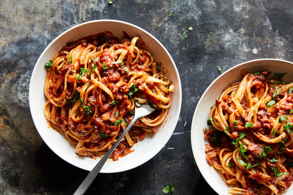

Vegan Bolognese with Mushrooms and Walnuts

Description
Some may balk at this version of Bolognese, the classic Italian ragù, because it bypasses the meat and dairy that are traditionally integral to the dish. But this recipe is equally rich, robust and complex, owing to seared mushrooms and toasted walnuts,
which are bolstered by balsamic vinegar, tomato paste, soy sauce and Marmite. A popular British sandwich spread made from concentrated yeast extract, Marmite brings salty, bitter notes to the sauce, but you can substitute a vegetable bouillon
concentrate paste — or skip it entirely. Enjoy the sauce over cooked pasta or employ it in this vegetarian lasagna Bolognese.
Ingredients
- 1 cup shelled walnuts (about 100 grams), chopped into pieces no larger than 1/4-inch (see Tip)
- Kosher salt and black pepper
- 1 pound fresh mushrooms (preferably half shiitake and half cremini)
- ½ cup olive oil, plus more for serving
- 1 teaspoon fennel seeds
- 2 teaspoons soy sauce
- 2 teaspoons thick, syrupy balsamic vinegar (optional)
- 1 medium yellow onion, finely chopped (about 1 1/3 cups)
- 1 medium carrot, peeled and finely chopped (about 1 cup)
- 2 celery stalks, peeled and finely chopped (about 3/4 cup)
- 4 garlic cloves, chopped
- 1 teaspoons dried oregano
- ¾ teaspoon red-pepper flakes
- 3 tablespoons tomato paste
- 2 teaspoons Marmite
- ½ cup dry vegan red wine
- 1 (28-ounce) can crushed tomatoes
- Linguine, fettuccine or other long pasta (about 4 ounces per serving), cooked until al dente
- Minced fresh parsley or sliced fresh basil, for serving (optional)
Directions
- Add the chopped nuts to a large Dutch oven or heavy pot and toast over medium, stirring frequently, until they visibly sweat and become fragrant, about 5 minutes. Season with salt and pepper, transfer to a medium bowl and set aside.
- Prepare the mushrooms: Stem the shiitake mushrooms (reserve the stems another use), if using, then wipe the mushroom caps clean using damp paper towels. Chop the caps into 1/4-inch pieces. (Resist the urge to use a food processor here, which will
chop the mushrooms unevenly.)
- Wipe out the pot, then heat 2 tablespoons olive oil over medium-high. Add half the mushrooms and 1/2 teaspoon fennel seeds, season generously with salt and pepper, and cook, stirring occasionally, until browned, about 6 minutes. Transfer to the
bowl with the toasted walnuts, then repeat with the remaining mushrooms and the remaining 1/2 teaspoon fennel seeds. Stir the soy sauce into the mushroom mixture, then the balsamic (if using). Set aside.
- Wipe out the pot, then heat 2 tablespoons olive oil over medium. Add the onion, carrot and celery, season generously with salt and pepper, and cook, stirring occasionally, until starting to caramelize and brown at the edges, about 7 minutes. Stir
in the mushroom-walnut mixture, garlic, oregano and red-pepper flakes, and stir until fragrant, 1 to 2 minutes. Stir in the tomato paste and Marmite, and cook, stirring frequently, until darkened and caramelized, 4 to 5 minutes.
- Pour in the wine and cook, stirring occasionally, until the alcohol cooks off and the liquid reduces until thick and sticky, 3 to 4 minutes.
- Add the crushed tomatoes, along with 1 cup water. Bring to a simmer over high.
- Reduce the heat to medium-low, cover and cook, stirring occasionally, until the tomatoes are cooked through and flavors meld, 30 to 40 minutes. Stir in 2 tablespoons olive oil, for richness, then season to taste with salt and pepper. (Makes about
6 cups.)
- Meanwhile, cook the pasta according to package instructions until al dente. Drain, reserving 1 1/2 cups pasta water.
- Toss the cooked pasta with the desired amount of sauce (about 3/4 cup to 1 cup per serving), adding pasta water as needed so sauce is glossy.
- Divide cooked pasta among shallow bowls and top with more sauce. Drizzle with olive oil and sprinkle with parsley or basil, if using, and serve immediately. (Leftover sauce will keep covered in the refrigerator for a few days, or frozen for up
to 3 months.)